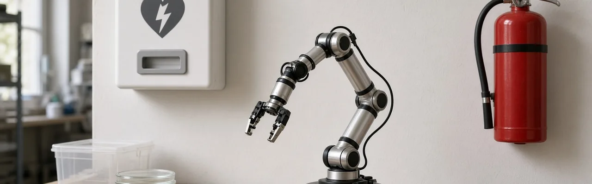
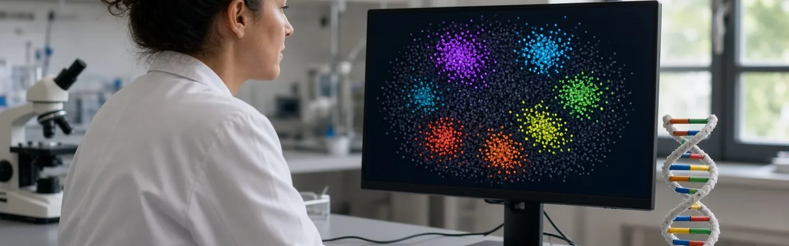
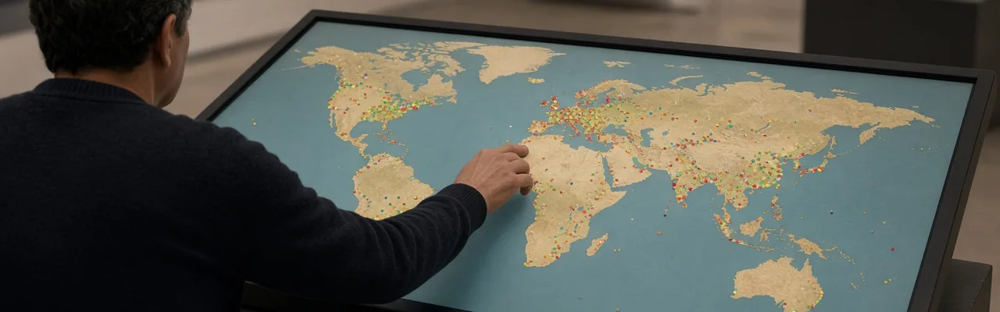

MIT-forskere har bygget et system som fanger opp de usikre oppføringene i en robots visuelle minne, for eksempel en hjertestarter som ved en feil er merket som et brannslukningsapparat, og som henter et par ekstra lagrede bilder for å avklare usikkerheten i stedet for å stole på en enkelt, feilutsatt gjetning. I de rapporterte testene løste systemet usikkerheten for rundt 92 % av objektene roboten hadde sett, med bare to ekstra bildebeskrivelser per objekt. Arbeidet skal presenteres på konferansen Neural Information Processing Systems.
Kilde: news.mit.edu →
Google DeepMind har lansert AlphaGenome 2, trent på over 100 millioner enkeltcelleprofiler fra 68 vevstyper, som forutsier hvordan en DNA-variant påvirker én bestemt vevs- eller celletype i stedet for et gjennomsnitt over alle. DeepMind melder at modellen finner nesten dobbelt så mange varianter som endrer genuttrykk i celler, sammenlignet med forgjengeren: en reell gevinst for forskere som forsøker å koble DNA-endringer til sykdom. Den er gratis for ikke-kommersiell forskning, og DeepMind er tydelige på at den ennå ikke er validert for klinisk bruk.
Kilde: deepmind.google →
Google Research og Google DeepMind har lansert Language Explorer, en åpen plattform bygget på datasettet LinguaMeta fra 1000 Languages Initiative. Der kan hvem som helst søke blant rundt 7000 språk og 159 skriftsystemer, sortert på navn, region, antall talere eller hvor utrydningsutsatt språket er. Verktøyet vises også på Museum für Kommunikation i Berlin: en fin påminnelse om at AI kan hjelpe med å dokumentere og holde menneskelige språk synlige i stedet for å flate dem ut.
Kilde: research.google →